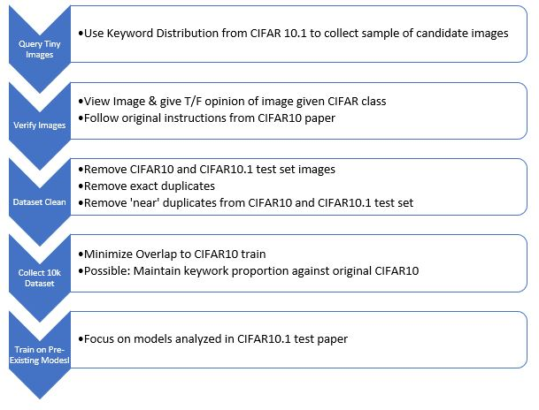
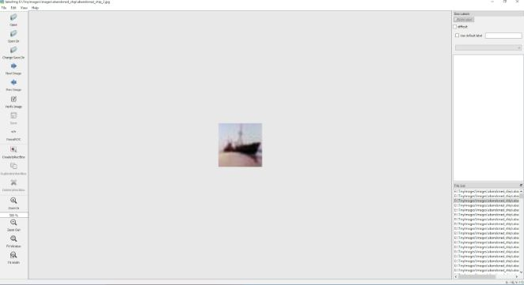
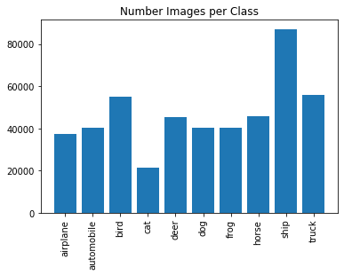
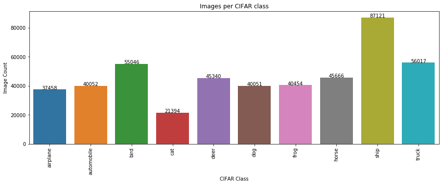
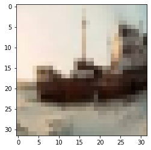
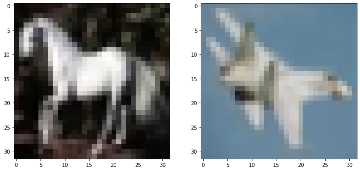
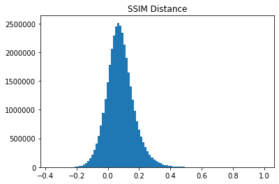
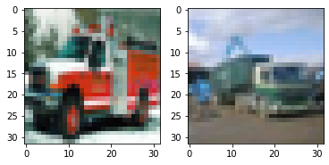

CIFAR 102 - Are Machine Learning Models Generalizable
Machine Learning Models has continued to improve performance against many of the best known image datasets (MS COCO, ImageNet, CIFAR...). New models that are best in class may beat former models by slimming margins (~1% accuracy improvement). A recent paper 'Do ImageNet Classifiers Generalize to ImageNet? {https://people.csail.mit.edu/ludwigs/papers/imagenet.pdf} highlighted a drop in performance on a new test set which emulated the datset generation process detailed in both ImageNet and CIFAR10. The authors noted that the drop in accuracy is likely due to a 'generalization gap' in which the model performs very well on the original training and test set - but a new dataset which has some distribution shift has caused a substantial drop in accuracy.
This paper and project seeks to go further based on this analysis, by generating a new training set - once again emulating the dataset generation process outlined in the original CIFAR paper {https://www.cs.toronto.edu/~kriz/learning-features-2009-TR.pdf}. Fortunately the dataset emulation was detailed thoroughly and given below:
After assembling a new training dataset we can then use the pre-existing published models to observe accuracy metrics and better understand where specific models, and model architectures can and cannot generalize well. This notebook will be written in the following order:
- Training Dataset Creation
- Model Training
We will begin by describing the training datset generation process. We are currently utilizing an intermediary 10k image datset (goal 60k) where 8k are dedicated to training and 2k for testing. Shown below is a flow chart desribing the process to create a valid training dataset:
|  |
Training Dataset Generation - Query Tiny Images, Candidate Image Collection and Verify Images
The original CIFAR paper queried tiny images - a dataset containing 80 million images with a large array based on wordnet of nouns to categorize the images. Using a candidate set of keywords the CIFAR paper queried a certain number of images related to 10 categories (for CIFAR10). From these image candidates the image verification protocol previously shown was followed by Amazon Turk mechanical workers. After establishing verified images the dataset was then published.
We will follow a similar protocol using the keywords published in the CIFAR 10.1 paper. From these keywords we collected over 466k candidate images, containing images both within the original CIFAR10 train/test datsets, the CIFAR 10.1 test dataset and a collection of new images - depicted below are the image counts using these keyword distribution:
 |
In order to verify thse images we used the LabelIMG software intended for image classification and object detection. A depiction of the UI is given below:

As can be seen - the UI mimics the original UI in which users were shown candidate images and they had to verify if the image belonged to the CIFAR class that was shown. While verifying images the users attempted to follow the first instruction whereby an image belongs to a CIFAR10 class if a user could look at the image and come to the same conclusion as the proposed label.
The code cells below walk through the image query process. Images were written into folders using the structure: CIFAR10class/TinyImagesKeyword/Image01. The users then went through images following close to the same proportion for each keyword in the CIFAR class.
### Import Required Libraries
import os
import pickle
import numpy as np
import tqdm
import scipy, scipy.misc
import pandas as pd
from PIL import Image
from matplotlib.pyplot import imshow
from collections import defaultdict
import matplotlib.pyplot as plt
import pandas as pd
import seaborn as sns
from PIL import Image
from skimage.metrics import structural_similarity as ssim
%matplotlib inline
from scipy.spatial import distance
TinyImagesFilepath = 'E:\\TinyImages\\'
VerifiedImagesFilepath = 'C:\\Users\\AOlson\\Documents\\UC Berkeley MIDS\\w210_capstone\\CIFAR-10.1\\other_data\\VerifiedImages'
CIFAR10Filepath = 'C:\\Users\\AOlson\\Documents\\UC Berkeley MIDS\\w210_capstone\\CIFAR-10.1\\datasets\\cifar10\\'
CIFAR101Filepath = 'C:\\Users\\AOlson\\Documents\\UC Berkeley MIDS\\w210_capstone\\CIFAR-10.1\\'
The cell below uses the kyword_counts_v7 json file from the CIFAR10.1 dataset assembly process. Our work has identified that the original CIFAR10 dataset used additional keywords with low overall total images. We will include analysis of the images that were sourced from different keywords elsewhere. For now this provides the basis for the 10k dataset, and should we choose to include the additional found keywords in our 60k dataset we will work through the new assembly process
### Import Keywords from keyword_counts file published from CIFAR10.1
cifar_dict = defaultdict(list)
import json
keyword_list = []
with open('C:\\Users\\AOlson\\Documents\\UC Berkeley MIDS\\w210_capstone\\CIFAR-10.1\\other_data\\keyword_counts_v7.json') as json_file:
data = json.load(json_file)
for x in data:
for y in data[x]:
cifar_dict[x].append(y)
keyword_list.append(y)
### Loop through metadata file and write keyword and index to default dict
from collections import defaultdict
keywords = defaultdict(list)
x = 0
with open(TinyImagesFilepath + 'tiny_metadata.bin', 'rb') as f:
while True:
x += 1
data = f.read(768)
if not data: break
keyword = str(data[0:80], 'utf-8').strip()
if keyword in keyword_list:
filename = str(data[80:185], 'utf-8').split(' ')[0]
# Write meta file containing index_filename
keywords[keyword].append(str(x) + '_' + filename)
### Using keywords dict - loop through indexes of images and save image array to default dict
images = defaultdict(list)
for key in keywords:
for v in keywords[key]:
# extract index from meta dictionary
indx = int(v.split('_')[0])
num_images = 1
offset = indx * 3072
reshape = True
data_file = open(TinyImagesFilepath + 'tiny_images.bin', 'rb')
data_file.seek(offset)
data = data_file.read(3072 * num_images)
result = np.fromstring(data, dtype='uint8')
if reshape:
if num_images == 1:
result = result.reshape(32, 32, 3, order='F')
else:
result = result.reshape(32, 32, 3, num_images, order='F')
result = result.transpose([3, 0, 1, 2])
images[key].append(result)
print('Complete!')
C:\Users\AOlson\AppData\Local\Continuum\anaconda3\lib\site-packages\ipykernel_launcher.py:15: DeprecationWarning: The binary mode of fromstring is deprecated, as it behaves surprisingly on unicode inputs. Use frombuffer instead
from ipykernel import kernelapp as app
Complete!
### Cell generates a plot based on the 10 classes of CIFAR and total number of images found from Tiny images keyword query
cifar_counts = {
'airplane': 0,
'automobile': 0,
'bird': 0,
'cat': 0,
'deer': 0,
'dog': 0,
'frog': 0,
'horse': 0,
'ship': 0,
'truck': 0
}
for key in images.keys():
for keyd, valued in cifar_dict.items():
if key in valued:
cifar_counts[keyd] += len(images[key])
plt.bar(range(len(cifar_counts)), list(cifar_counts.values()), align='center')
plt.xticks(range(len(cifar_counts)), list(cifar_counts.keys()))
# # for python 2.x:
# plt.bar(range(len(D)), D.values(), align='center') # python 2.x
# plt.xticks(range(len(D)), D.keys()) # in python 2.x
plt.xticks(rotation=90)
plt.title('Number Images per Class')
plt.show()
|  |
### Cell generates a plot based on the 10 classes of CIFAR and total number of images found from Tiny images keyword query
plt.figure(figsize=(15,5))
df = pd.DataFrame(cifar_counts.values(), cifar_counts.keys())
df = df.reset_index()
g = sns.barplot('index', 0, data = df)
plt.xticks(rotation=90)
for index, row in df.iterrows():
g.text(row.name,row[0], row[0], color='black', ha="center")
plt.title('Images per CIFAR class')
plt.xlabel('CIFAR Class')
plt.ylabel('Image Count')
Text(0, 0.5, 'Image Count')
|  |
### Write both dictionaries to pickle files
with open(TinyImagesFilepath + 'data.pickle', 'wb') as handle:
pickle.dump(images, handle)
with open(TinyImagesFilepath + 'meta.pickle', 'wb') as handle:
pickle.dump(keywords, handle)
### Use data and metadata bin files to preview image by index number
### This cell only shows single images and doesn't process the dictinoaries as a whole
reshape = True
data_file = open(TinyImagesFilepath + 'tiny_images.bin', 'rb')
data_file.seek(offset)
data = data_file.read(3072 * num_images)
with open (TinyImagesFilepath + 'data.pickle', 'wb') as f:
pickle.dump(data, f)
result = np.fromstring(data, dtype='uint8')
offset = indx * 768
meta_file = open(TinyImagesFilepath + 'tiny_metadata.bin', 'rb')
meta_file.seek(offset)
data = meta_file.read(768*num_images)
with open (TinyImagesFilepath + 'meta.pickle', 'wb') as f:
pickle.dump(data, f)
keyword = str(data[0:80], 'utf-8').strip()
filename = str(data[80:185], 'utf-8').split(' ')[0]
width = data[185:187]
height = data[187:189]
color = data[189:190]
date = data[190:222]
engine = data[222:232]
thumbnail = data[232:432]
source = data[432:760]
page = data[760:764]
indpage = data[764:768]
indengine = data[768:762]
indoverall = data[762:764]
label = data[764:768]
print(keyword, filename, width, height, color, date, engine, thumbnail,
source, page, indpage, indengine,indoverall, label)
result
young young_s_000001.png b' 2' b'00' b'6' b' 14:07:07 +0000 google ' b'http://ima' b'ges.google.com/images?q=tbn:Z9bf4ecp_8ej2M:http://www.uncwil.edu/honors/small%252003/smBlair%2520Young.JPG http://www' b'.uncwil.edu/honors/small%252003/smBlair%2520Young.JPG 1 1 1 ' b' 1 ' b' -1' b'' b'1 ' b' -1'
C:\Users\AOlson\AppData\Local\Continuum\anaconda3\lib\site-packages\ipykernel_launcher.py:10: DeprecationWarning: The binary mode of fromstring is deprecated, as it behaves surprisingly on unicode inputs. Use frombuffer instead
# Remove the CWD from sys.path while we load stuff.
array([65, 55, 83, ..., 31, 33, 34], dtype=uint8)
### Load pickle file of images by keword
filename = TinyImagesFilepath + 'data.pickle'
infile = open(filename,'rb')
images = pickle.load(infile)
infile.close()
filename = TinyImagesFilepath + 'meta.pickle'
infile = open(filename,'rb')
meta = pickle.load(infile)
infile.close()
images.keys()
dict_keys(['abandoned_ship', 'accentor', 'aerial_ladder_truck', 'aeroplane', 'airbus', 'airliner', 'airplane', 'alauda_arvensis', 'alces_alces', 'alley_cat', 'alytes_obstetricans', 'ambulance', 'american_elk', 'american_saddle_horse', 'american_toad', 'amphibious_aircraft', 'anthus_pratensis', 'anuran', 'appaloosa', 'apteryx', 'arab', 'arabian', 'articulated_lorry', 'attack_aircraft', 'auto', 'automobile', 'banana_boat', 'barge', 'barking_deer', 'barking_frog', 'barren_ground_caribou', 'beach_wagon', 'biplane', 'bird', 'bird_of_passage', 'blenheim_spaniel', 'boat', 'bookmobile', 'brocket', 'broodmare', 'buckskin', 'bufo', 'bufo_americanus', 'bufo_boreas', 'bufo_bufo', 'bufo_calamita', 'bufo_debilis', 'bufo_marinus', 'bufo_microscaphus', 'bufo_speciosus', 'bufo_viridis', 'bullfrog', 'cab', 'cabin_cruiser', 'camion', 'canis_familiaris', 'capreolus_capreolus', 'car', 'car_transporter', 'cargo_ship', 'cargo_vessel', 'caribou', 'cascades_frog', 'cassowary', 'cat', 'cavalry_horse', 'cervus_elaphus', 'cervus_sika', 'cervus_unicolor', 'chihuahua', 'cock', 'compact', 'compact_car', 'container_ship', 'container_vessel', 'containership', 'convertible', 'coupe', 'cow_pony', 'crapaud', 'cruiser', 'cur', 'dama_dama', 'dawn_horse', 'deer', 'delivery_truck', 'delivery_van', 'dive_bomber', 'dog', 'domestic_cat', 'domestic_dog', 'dredger', 'dromaius_novaehollandiae', 'dump_truck', 'dumper', 'dunnock', 'dustcart', 'elephant_bird', 'elk', 'emu', 'emu_novaehollandiae', 'english_toy_spaniel', 'estate_car', 'european_elk', 'european_toad', 'fallow_deer', 'fawn', 'feist', 'felis_catus', 'felis_domesticus', 'female_horse', 'ferry', 'ferryboat', 'fighter', 'fighter_aircraft', 'finch', 'fire_engine', 'fire_truck', 'fireboat', 'flightless_bird', 'floatplane', 'flying_bird', 'freighter', 'frog', 'funny_wagon', 'gamecock', 'garbage_truck', 'gelding', 'grass_frog', 'green_frog', 'guard_boat', 'hangar_queen', 'hen', 'honey_eater', 'horse', 'hospital_ship', 'house_cat', 'houseboat', 'hydrofoil', 'iceboat', 'icebreaker', 'japanese_deer', 'japanese_spaniel', 'jetliner', 'jumbo_jet', 'jumbojet', 'king_charles_spaniel', 'kiwi', 'ladder_truck', 'lapdog', 'lark', 'laundry_truck', 'leopard_frog', 'leptodactylid', 'leptodactylus_pentadactylus', 'liberty_ship', 'lightship', 'lipizzan', 'lippizan', 'lippizaner', 'lorry', 'male_horse', 'maltese', 'maltese_dog', 'mare', 'meadow_pipit', 'merchant_ship', 'merchantman', 'midwife_toad', 'minesweeper', 'mongrel', 'monoplane', 'moose', 'motorboat', 'motorcar', 'mouser', 'moving_van', 'mule_deer', 'multiengine_airplane', 'muntjac', 'musk_deer', 'mutt', 'nandu', 'natterjack', 'night_bird', 'norfolk_wherry', 'odocoileus_hemionus', 'oil_tanker', 'ostrich', 'packet_boat', 'panel_truck', 'pantechnicon', 'passenger_ship', 'passerine', 'peke', 'pekinese', 'pekingese', 'pickerel_frog', 'pilot_boat', 'pipit', 'plane', 'plantation_walking_horse', 'pleasure_boat', 'pleasure_craft', 'police_boat', 'police_cruiser', 'pontoon', 'powerboat', 'prancer', 'propeller_plane', 'prunella_modularis', 'puppy', 'quarter_horse', 'racing_boat', 'rana_cascadae', 'rana_catesbeiana', 'rana_clamitans', 'rana_pipiens', 'rana_temporaria', 'rangifer_caribou', 'rangifer_tarandus', 'ratite', 'reconnaissance_plane', 'red_deer', 'reindeer', 'rhea', 'rhea_americana', 'riding_horse', 'rig', 'river_boat', 'roe_deer', 'rowboat', 'saddle_horse', 'sambar', 'scow', 'sea_boat', 'seaplane', 'semi', 'ship', 'shooting_brake', 'sika', 'skylark', 'songbird', 'sound_truck', 'southwestern_toad', 'spadefoot', 'sparrow', 'speedboat', 'spring_frog', 'stag', 'stallion', 'station_wagon', 'stealth_bomber', 'stealth_fighter', 'struthio_camelus', 'stud_mare', 'studhorse', 'supertanker', 'tabby', 'tabby_cat', 'tailed_frog', 'tandem_trailer', 'tank_ship', 'tanker', 'taxi', 'tennessee_walker', 'tennessee_walking_horse', 'texas_toad', 'tip_truck', 'tipper', 'tipper_lorry', 'tipper_truck', 'toad', 'toad_frog', 'tomcat', 'tow_truck', 'toy', 'toy_dog', 'toy_spaniel', 'tractor_trailer', 'trailer_truck', 'transporter', 'truck', 'trucking_rig', 'true_cat', 'true_frog', 'true_toad', 'tug', 'tugboat', 'twinjet', 'wagon', 'wagtail', 'walking_horse', 'wapiti', 'western_toad', 'woodland_caribou', 'wrecker', 'yosemite_toad'])
Create folders to save images
Markdown File to prevent running
filepath = TinyImgesFilepath + 'ImagesCIFARVerified\'
for key in images.keys():
os.mkdir(filepath + key)
for key in cifar_dict.keys(): os.mkdir(filepath + key)
for key in images.keys(): for keyd, valued in cifar_dict.items(): if key in valued: break filepath2 = filepath + keyd + '\' os.mkdir(filepath2 + key)
### Save to image
### Also loops through and generates cifar filepaths for the local save -
### this is included in our larger CIFAR102 dictionary for reference
cifar_filepaths = defaultdict(list)
for key in images.keys():
cifar_key = ''
for keyd, valued in cifar_dict.items(): # for name, age in dictionary.iteritems(): (for Python 2.x)
if key in valued:
cifar_key = keyd
x = 0
for v in images[key]:
cifar_filepaths[key].append(cifar_key + '\\' + key + '\\' + key + '_' + str(x) + '.jpg')
# im = Image.fromarray(v)
# im.save(TinyImgesFilepath + 'ImagesCIFAR\\' + cifar_key + '\\' + key + '\\' + key + '_' + str(x) + '.jpg')
x += 1
Training Dataset Generation - Analyzing Verified Images
After verifying images, we totaled approximately 18k verified images amongst the 10 classes in CIFAR10. Below we show how many images were found in each CIFAR10 class:

From this list of verified images, it was then necessary to remove duplicates within the verified images and remove duplicates to the CIFAR10 and CIFAR10.1 test sets. It was important to remove duplicates to the former test sets because it is intended to utilize CIFAR10, CIFAR10.1 and CIFAR10.2 datasets to understand model generalization. If CIFAR10.2 training dataset had images contained in the other datasets test set the accuracy would be incorrectly high.
Below we read in the verified images, and remove duplicates - this code can be found more thoroughly in both the PrepTinyImages notebook as well as the df_overlap_assembly notebook:
Reading in Verified Images
At this point we have worked through a large number of images and verified which images in fact do belong the CIFAR class the original keyword query had assigned. We now need to read in the verified images in order to understand count / proportion by class and keyword, as well as assembling our 10k and eventually 60k datasets.
### Read in verified xml data
from bs4 import BeautifulSoup
from collections import defaultdict
import os
import glob
cifar = defaultdict(float)
verified_images = defaultdict(list)
tinyimages = defaultdict(float)
### cif contains dictionary with # keywords per class
cif = {'airplane': 24,
'automobile': 19,
'bird': 36,
'cat': 11,
'deer': 32,
'dog': 22,
'frog': 43,
'horse': 28,
'ship': 50,
'truck': 34}
extension = 'xml'
os.chdir(VerifiedImagesFilepath)
xmlfiles = glob.glob('*.{}'.format(extension))
xmlfiles = [VerifiedImagesFilepath + "\\" + a for a in xmlfiles]
# tinyimages: dictinoary with keys = keywords and values = count
# cifar: dictionary with keys = class and values = count
# verified_images: dictionary with keys = cifar class and values = list of truncated filename
for file in xmlfiles:
infile = open(file,"r")
contents = infile.read()
soup = BeautifulSoup(contents,'xml')
path = soup.find_all('path')
try:
tinyimages[path[0].text.split('\\')[-2]] += 1
cifar[path[0].text.split('\\')[-3]] += 1
verified_images[path[0].text.split('\\')[-3]].append('\\'.join(path[0].text.split('\\')[-3:]))
except:
tinyimages[path[0].text.split('/')[-2]] += 1
cifar[path[0].text.split('/')[-3]] += 1
verified_images[path[0].text.split('/')[-3]].append('\\'.join(path[0].text.split('/')[-3:]))
### Find duplicate images amongst our verified images
dropout = defaultdict(list)
for key in verified_images:
key_images = []
for v in verified_images[key]:
ar = np.array(Image.open(TinyImagesFilepath + 'ImagesCIFAR\\' + v)).tolist()
if ar in key_images:
dropout[key].append(v)
else:
key_images.append(ar)
for key in dropout:
print(key + ': ' + str(len(dropout[key])))
ship: 11
bird: 149
truck: 19
airplane: 31
deer: 7
cat: 15
frog: 148
automobile: 43
horse: 70
dog: 4
### Understand how many images were duplicates and how many remain in dataset
print('Original')
for key in verified_images:
print(key + ': ' + str(len(verified_images[key])))
for key in dropout:
for v in dropout[key]:
verified_images[key].remove(v)
print('After duplicate removal')
for key in verified_images:
print(key + ': ' + str(len(verified_images[key])))
Original
ship: 1877
bird: 4031
truck: 1442
airplane: 2913
deer: 1431
cat: 1414
frog: 2931
automobile: 2219
horse: 2917
dog: 1285
After duplicate removal
ship: 1866
bird: 3882
truck: 1423
airplane: 2882
deer: 1424
cat: 1399
frog: 2783
automobile: 2176
horse: 2847
dog: 1281
Copy verified images from original folder structure to verified folder
Not necessary given our dataset = dictionary
Converted to Markdown to prevent running
import shutil for key in verified_images: for v in verified_images[key]: shutil.copyfile(TinyImagesFilepath + 'ImagesCIFAR\' + v, 'E:\TinyImages\ImagesCIFARVerified\' + v)
### Display statistics based on count of dropouts
dropoutper = defaultdict(float)
for key in dropout:
dropoutper[key] = dropout[key] / cifar[key]
import pandas as pd
plt.figure(figsize=(15,5))
df = pd.DataFrame(dropoutper.values(), dropoutper.keys())
import seaborn as sns
df = df.reset_index()
g = sns.barplot('index', 0, data = df)
plt.xticks(rotation=90)
for index, row in df.iterrows():
g.text(row.name,round(row[0],2), round(row[0],2), color='black', ha="center")
plt.title('Proportion Duplicate')
plt.xlabel('CIFAR Class')
plt.ylabel('Image Count')
---------------------------------------------------------------------------
TypeError Traceback (most recent call last)
<ipython-input-33-cdf923568307> in <module>
3 dropoutper = defaultdict(float)
4 for key in dropout:
----> 5 dropoutper[key] = dropout[key] / cifar[key]
6
7 import pandas as pd
TypeError: unsupported operand type(s) for /: 'list' and 'float'
### Display image count after removing duplicates
image_count = []
for key in verified_images.keys():
image_count.append(len(verified_images[key]))
plt.figure(figsize=(20,10))
plt.bar(range(len(verified_images)), image_count, align='center')
plt.xticks(range(len(verified_images)), list(verified_images.keys()))
plt.xticks(rotation=90)
plt.title('Image Count Post Duplicate Removal')
plt.show()
### Create master dictionary for CIFAR102
### dict_keys([b'labels', b'data', b'filenames'])
cifar_class_dict = {'airplane':0,
'automobile':1,
'bird':2,
'cat':3,
'deer':4,
'dog':5,
'frog':6,
'horse':7,
'ship':8,
'truck':9}
cifar102 = defaultdict(list)
# Loop through images dictionary - referenced by
for key in verified_images:
for v in verified_images[key]:
cifar_key = key
tiny_key = v.split('\\')[1]
index = cifar_filepaths[tiny_key].index(v)
data = images[tiny_key][index]
cifar102[b'labels'].append(cifar_class_dict[cifar_key])
cifar102[b'data'].append(data)
cifar102[b'filenames'].append(keywords[tiny_key][index])
cifar102[b'cifarclass'].append(cifar_key)
cifar102[b'tinykeyword'].append(tiny_key)
cifar102[b'localfilename'].append(v)
cifar102
### Save CIFAR102 dictinoary
outfile = open(TinyImagesFilepath + 'cifar102_10kv2.pickle', 'wb')
pickle.dump(cifar102, outfile)
outfile.close()
Load Image Data: Tiny Images Subset
466,009 images that match the same keyword distribution used construct the CIFAR-10 dataset
Note: This subset was created via a separate task on a local machine through comparing CIFAR-10 keywords to line-by-line read of a Tiny Images dataset binary file
Data subset (dictionary) format:
Keys: Tiny Images keywords
Values: list of numpy arrays (32x32x3 images)
# Load subset pickle file
import time
t1 = time.time()
# prefix = 'data/tinyimage/function-test/data.pickle'
# #response = client.get_object(Bucket=bucket, Key=prefix)
# response = s3.get_object(Bucket=bucket, Key=prefix)
# subset_data = pickle.loads(response['Body'].read())
t2 = time.time()
# Load from local
filename = TinyImagesFilepath + 'data.pickle'
infile = open(filename,'rb')
subset_data = pickle.load(infile)
infile.close()
print('Tiny Images subset pickle loaded in {} seconds'.format(round(t2-t1, 1)))
print('Total images: {}'.format(sum(len(x) for x in subset_data.values())))
Tiny Images subset pickle loaded in 0.0 seconds
Total images: 466009
Process Image Arrays: Tiny Images Subset
-
Flatten individual image arrays and convert to tuples; Store all images as a single list of tuples
Note: This supports comparisons (e.g., np.unique, pd.DataFrame.drop_duplicates, etc.) since arrays are not hashable
Alternatively: you could convert the arrays in-place (within the dictionary that was loaded in the previous step) rather than creating a new list object.
I create new lists here, but later when I load our verified images I just convert in-place. The first approach preserves the original data, the second conserves RAM.
-
Store all keywords for each image separately to use as a DataFrame column
# Process image arrays
# - convert and store image arrays in a single list
# - store image keyword labels separately
t1 = time.time()
tiny_img_subset = []
key_list = []
for keyword in subset_data:
images = [tuple(img.flatten()) for img in subset_data[keyword]]
tiny_img_subset.extend(images)
key_list.extend([keyword for x in range(len(subset_data[keyword]))])
t2 = time.time()
print('Total images: {}'.format(len(tiny_img_subset)))
print('Wall time: {} seconds'.format(round(t2-t1, 1)))
Total images: 466009
Wall time: 156.7 seconds
# Quick check for exact duplicates
t1 = time.time()
num_no_duplicates = len({x for x in tiny_img_subset})
print('Total exact duplicates: {}'.format(len(tiny_img_subset) - num_no_duplicates))
t2 = time.time()
print('Wall time: {} seconds'.format(round(t2-t1, 1)))
Total exact duplicates: 11305
Wall time: 405.4 seconds
# assemble a dataframe ready for merging with CIFAR-10
df_tiny_img = pd.concat([pd.Series(tiny_img_subset, name='img_array'), pd.Series(key_list, name='tiny_keyword')], axis=1)
print(df_tiny_img.head())
print(df_tiny_img.shape)
img_array tiny_keyword
0 (239, 239, 247, 236, 236, 244, 236, 236, 243, ... abandoned_ship
1 (239, 229, 219, 240, 230, 220, 241, 231, 221, ... abandoned_ship
2 (198, 205, 226, 195, 201, 222, 195, 201, 222, ... abandoned_ship
3 (152, 194, 218, 150, 191, 215, 152, 193, 216, ... abandoned_ship
4 (195, 201, 191, 144, 151, 133, 112, 121, 91, 1... abandoned_ship
(466009, 2)
Load CIFAR10 Images
# Load CIFAR-10 data batches
batch_names = ['data_batch_' + str(i) for i in range(1,6)]
batch_names.append('test_batch')
batches = []
batch_id = []
t1 = time.time()
for batch in batch_names:
# prefix = 'data/cifar10/cifar-10-batches-py/' + batch
# response = s3.get_object(Bucket=bucket, Key=prefix)
# batches.append(pickle.loads(response['Body'].read(), encoding='bytes'))
filename = CIFAR10_Filepath + batch
batches.append(pickle.loads(filename, encoding='bytes'))
batch_id.extend([batch for x in range(10000)])
t2 = time.time()
print('All CIFAR-10 training batches & test batch loaded in {} seconds'.format(round(t2-t1,1)))
batches[0].keys()
---------------------------------------------------------------------------
NameError Traceback (most recent call last)
<ipython-input-41-67f09ce486c6> in <module>
14 # batches.append(pickle.loads(response['Body'].read(), encoding='bytes'))
15
---> 16 filename = CIFAR10_Filepath + batch
17 batches.append(pickle.loads(filename, encoding='bytes'))
18
NameError: name 'CIFAR10_Filepath' is not defined
# Load CIFAR-10 meta
# - The only thing we will use from the CIFAR-10 meta data is 'label_names'
# - We want to convert each image's label number to a label name and use that in a column of the dataframe
# prefix_meta = 'data/cifar10/cifar-10-batches-py/batches.meta'
# response_meta = s3.get_object(Bucket=bucket, Key=prefix_meta)
# CIFAR_10_meta = pickle.loads(response_meta['Body'].read())
filepath = CIFAR10_Filepath + 'batches.meta'
CIFAR_10_meta = pickle.loads(filepath)
# Reshape procedure for each CIFAR-10 batch
batch = batches[0][b'data'].reshape(10000, 3, 32, 32).transpose(0,2,3,1).astype("uint8")
# assemble components for a CIFAR-10 dataframe
t1 = time.time()
CIFAR_images = []
CIFAR_class_names = []
for batch in batches:
image_list = [tuple(x.reshape(3,32,32).transpose(1,2,0).astype("uint8").flatten()) for x in batch[b'data']]
label_list = [CIFAR_10_meta['label_names'][x] for x in batch[b'labels']]
CIFAR_images.extend(image_list)
CIFAR_class_names.extend(label_list)
t2 = time.time()
print('Total images: {}'.format(len(CIFAR_images)))
print('Wall time: {} seconds'.format(round(t2-t1, 1)))
# Quick check for exact duplicates (there SHOULD be 0 exact duplicates in CIFAR-10)
t1 = time.time()
num_no_duplicates = len({x for x in CIFAR_images})
print('Total exact duplicates: {}'.format(len(CIFAR_images) - num_no_duplicates))
t2 = time.time()
print('Wall time: {} seconds'.format(round(t2-t1, 1)))
# Assemble a CIFAR-10 dataframe
df_CIFAR_10 = pd.concat([pd.Series(CIFAR_images, name='img_array'),
pd.Series(batch_id, name='cifar10_batch_id'),
pd.Series(CIFAR_class_names, name='cifar10_class_name')], axis=1)
print(df_CIFAR_10.shape)
df_CIFAR_10.head()
Remove exact duplicates from Tiny Image subset
CIFAR-10 already has exact duplicates removed, so we need to do the same for the subset from Tiny Images
# 11305 duplicates
print('Original Tiny Images subset row count: {}'.format(df_tiny_img.shape[0]))
# In list form the exact duplicate count was 11305; verify that count is still valid in dataframe format
duplicates = df_tiny_img.duplicated(subset='img_array').sum()
print('Original Tiny Images subset duplicate count: {}'.format(duplicates))
# Remove duplicate rows from the Tiny Images subset dataframe (exact duplicates)
t1 = time.time()
df_tiny_img.drop_duplicates(subset='img_array', keep='first', inplace=True)
t2 = time.time()
print('Duplicates found and removed in {} seconds'.format(round(t2-t1, 1)))
print('New row count: {}'.format(df_tiny_img.shape[0]))
print('Duplicates removed: {}'.format(466009-df_tiny_img.shape[0]))
Merge: Tiny Images subset and CIFAR-10
# add Tiny Images subset indicator column to support filtering
df_tiny_img['tiny_img_subset'] = 1
df_tiny_img.head()
# add CIFAR-10 indicator column to support filtering
df_CIFAR_10['cifar10'] = 1
df_CIFAR_10.head()
# Merge Tiny Images subset dataframe and original CIFAR-10 dataframe
# - Merge 'outer' to catch any CIFAR-10 images that our Tiny Images keyword query might have missed
# "Missed" CIFAR-10 images will not have a match in the Tiny Images subset dataframe 'img_array' column,
# so they will be added to the merged dataframe (indicated as 'right_only')
t1 = time.time()
df_all = df_tiny_img.merge(df_CIFAR_10, how='outer', on='img_array', indicator=True)
t2 = time.time()
print('Merge completed in {} seconds'.format(round(t2-t1,1)))
print('Post merge total row count: {}'.format(df_all.shape[0]))
print(df_all['_merge'].value_counts())
df_all.shape # subset - duplicates + missed CIFAR_10
# drop the indicator column; we can get the same information by jointly using the tiny_img_subset and cifar10 indicator columns
df_all.drop(['_merge'], axis=1, inplace=True)
# Fill na for tiny_img_subset and cifar10 columns with 0
df_all['tiny_img_subset'].fillna(0, inplace=True)
df_all['cifar10'].fillna(0, inplace=True)
df_all.head()
# What types of CIFAR-10 images did our Tiny Images query not find?
df_all[(df_all['cifar10'] == 1.0) & (df_all['tiny_img_subset'] == 0.0)]['cifar10_class_name'].value_counts()
# Define function to name train/test splits
def split_name(x):
if type(x) == str:
if x[:-2] == 'data_batch':
return 'train'
elif x == 'test_batch':
return 'test'
return np.nan
# Create column to identify CIFAR-10 train/test split membership
df_all['cifar_split'] = df_all['cifar10_batch_id'].apply(split_name)
# Drop CIFAR_10_batch_id column
df_all.drop('cifar10_batch_id', axis=1, inplace=True)
df_all.head()
df_all['cifar_split'].value_counts()
Load 10k verified images
# Load 10k verified image pickle file
t1 = time.time()
# prefix = 'data/cifar102/cifar102_10kv2.pickle'
# response = s3.get_object(Bucket=bucket, Key=prefix)
# verified_data = pickle.loads(response['Body'].read())
filepath = TinyImagesFilepath + 'cifar102_10kv2.pickle'
verified_data = pickle.loads(filepath)
t2 = time.time()
print('Verified 10k v2 pickle loaded in {} seconds'.format(round(t2-t1, 1)))
print('Total images: {}'.format(len(verified_data[b'data'])))
verified_data.keys()
verified_data[b'labels'][:10]
# Process image arrays
# - convert and store image arrays IN PLACE
t1 = time.time()
verified_data[b'data'] = [tuple(img.flatten()) for img in verified_data[b'data']]
t2 = time.time()
print('Wall time: {} seconds'.format(round(t2-t1, 1)))
df_cifar102_10k = pd.DataFrame(verified_data)
# prior to joining, add column to indicate that image is a member of our verified set
df_cifar102_10k['cifar102_10k'] = 1
# rename image column to support joining on the same column name
df_cifar102_10k.rename(columns = {b'data':'img_array'}, inplace = True)
df_overlap = df_all.merge(df_cifar102_10k, how='left', on='img_array')
df_overlap['cifar102_10k'].fillna(0, inplace=True)
df_overlap['cifar102_10k'].value_counts(dropna=False)
# Check that merge retained all verified images
print('Total cifar102: {}'.format(df_overlap['cifar102_10k'].sum()))
# convert tuples back to numpy arrays to reduce pickle size
t1 = time.time()
df_overlap['img_array'] = df_overlap['img_array'].apply(lambda x: np.array(x).reshape(32,32,3))
t2 = time.time()
print('Wall time: {} seconds'.format(round(t2-t1, 1)))
# check that if both values are strings, that they are equal
# - Want to verify that class labels are all the same when they should be
def check_pairs(df):
cifar10_class_name = 3
cifarclass = 8
for i,row in df.iterrows():
a = row[cifar10_class_name]
b = row[cifarclass]
if (type(a) == str) and (type(b) == str) and (a != b):
print('String label pairs do not match!')
return print('First mismatch, row {}, labels: ({},{})'.format(i, a, b))
return print('All string label pairs match')
check_pairs(df_overlap)
def merge_cifar_class(x):
a = type(x[3])
b = type(x[8])
if a == b == np.nan:
return np.nan()
elif a == str:
return x[3]
return x[8]
df_overlap['cifarclass'] = df_overlap.apply(merge_cifar_class, axis=1)
# drop old redundant columns
df_overlap.drop(['cifar10_class_name', b'cifarclass'], axis=1, inplace=True)
overlap = df_overlap.to_dict()
t1 = time.time()
filepath = 'C:\\Users\\AOlson\\Documents\\UC Berkeley MIDS\\w210_capstone\\CIFAR-10.1\\other_data\\'
output = open(filepath + 'overlap_v2.pkl', 'wb')
pickle.dump(overlap, output, protocol=pickle.HIGHEST_PROTOCOL)
output.close()
t2 = time.time()
print(t2-t1)
After analysis of the overlap between our 18k verified images as well as loading and comparing CIFAR10 and CIFAR10.1 datasets, removing the duplicates in the test set - we have the following overlap between our 18k verified images as well as the CIFAR10 training set:

As can be seen, roughly 50% of our verified images are contained in the original CIFAR10 training set. In order to minimize overlap, we will first choose images that aren't present in the original CIFAR10 training set, and then fill in the remainder. First we will inspect and remove the 'near' duplicates.
Training Dataset Generation - Understand and Inspect 'near' duplicate images
We have previously removed duplicate images from the CIFAR10 test set. We now need to inspect and understand 'near' duplicates to remove these as well. The premise behind removing near duplicates is the same as exact duplicates - the training images may be too similar and prohibit the training from properly generalizing to the task. We compute near duplicate by analyzing the structural similarity (SSIM) as well as Euclidean distance between every image in the verified image dataset against every image in the CIFAR10 and CIFAR10.1 test sets, retaining the maximum similarity value for each verified image. We also retain all SSIM and Euclidean distance metrics in order to understand the distribution of these values and define the threshold value to determine 'near' duplicates.
### Load Overlap V2 File
filename = 'C:\\Users\\AOlson\\Documents\\UC Berkeley MIDS\\w210_capstone\\CIFAR-10.1\\other_data\\overlap_v2.pkl'
infile = open(filename,'rb')
data = pickle.load(infile)
infile.close()
data.keys()
dict_keys(['img_array', 'tiny_keyword', 'tiny_img_subset', 'cifar10', 'cifar_split', b'labels', b'filenames', b'tinykeyword', b'localfilename', 'cifar102_10k', 'cifarclass'])
### Load CIFAR10.1 Dataset
%matplotlib inline
%load_ext autoreload
%autoreload 2
import json
import math
import os
import pickle
import random
import sys
from IPython.display import display
from ipywidgets import Layout
from ipywidgets import widgets
from matplotlib import pyplot as plt
import numpy as np
import tqdm
repo_root = CIFAR101_Filepath + "code" #os.path.join(os.getcwd(), '../code')
sys.path.append(repo_root)
import cifar10
import utils
cifar_label_names = utils.cifar10_label_names
version_string = 'v6'
images, labels, tinyimage_indices = utils.load_new_test_data(version_string, load_tinyimage_indices=True)
num_new_images = images.shape[0]
reshaped_images = np.reshape(images, (num_new_images, -1))
assert reshaped_images.shape == (num_new_images, 32 * 32 * 3)
print('\nLoaded version {} of the new dataset.'.format(version_string))
print('There are {} images in the dataset.'.format(images.shape[0]))
# cifar101 = pd.DataFrame({'data': images, 'labels': labels})
images_flatten = []
for im in images:
images_flatten.append(tuple(im.astype("uint8").reshape(3072, order = 'F')))
cifar101 = pd.concat([pd.Series(images_flatten, name='data'), pd.Series(labels, name='labels')], axis=1)
cifar101.drop(['labels'], axis=1, inplace=True)
cifar101['cifar101'] = 1
cifar101.head()
### Load file to dataframe and rename columns
overlap_df = pd.DataFrame.from_dict(data)
overlap_df.dropna(subset=['cifarclass'], inplace = True)
overlap_df = overlap_df[(overlap_df['cifar102_10k'] == 1)]
overlap_df.rename(columns={'img_array':'data', b'filenames': 'filenames', b'tinykeyword': 'tinykeyword', b'localfilename': 'localfilename', b'labels': 'labels'}, inplace=True)
# Function to convert class string to int based on original CIFAR dictionary - already completed in overlap_v2 dict
def transform_cifar(x):
cifar_class_dict = {'airplane':0,
'automobile':1,
'bird':2,
'cat':3,
'deer':4,
'dog':5,
'frog':6,
'horse':7,
'ship':8,
'truck':9}
return cifar_class_dict[x]
overlap_df['data'] = overlap_df['data'].apply(lambda x: tuple(x.astype("uint8").reshape(3072, order = 'F')))
overlap_df.head()
import time
t1 = time.time()
overlap_df = overlap_df.merge(cifar101, how='outer', on='data', indicator=True)
t2 = time.time()
print('Merge completed in {} seconds'.format(round(t2-t1,1)))
print('Post merge total row count: {}'.format(overlap_df.shape[0]))
print(overlap_df['_merge'].value_counts())
overlap_df.drop(['_merge'], axis=1, inplace=True)
overlap_df['data'] = overlap_df['data'].apply(lambda x: np.array(x).reshape(32,32,3, order = 'F'))
imshow(overlap_df['data'][0])
### Use SSIM to get maximum SSIM value along with index row looping over all verified images and comparing all cifar10 test images
### Also find minimum euclidean distance
overlap_df['ssim'] = np.NaN
overlap_df['ssim_index'] = np.NaN
overlap_df['euclidean'] = np.NaN
overlap_df['euclidean_index'] = np.NaN
len_overlap = len(overlap_df)
x = 0
t1 = time.time()
# loop over all verified images
for index, r in overlap_df[overlap_df['cifar102_10k'] == 1].iterrows():
# apply to all rows in cifar10 test
l = overlap_df[((overlap_df['cifar10'] == 1) & (overlap_df['cifar_split'] == 'test')) | (overlap_df['cifar101'] == 1)].apply(lambda row: ssim(row['data'].astype("uint8").reshape(3072, order = 'F'), r['data'].astype("uint8").reshape(3072, order = 'F')), axis = 1)
if index in l:
del l[index]
m = max(l.values)
overlap_df.at[index, 'ssim'] = m
overlap_df.at[index, 'ssim_index'] = l[l == m].index.tolist()[0]
# apply to all rows in cifar10 test
l = overlap_df[((overlap_df['cifar10'] == 1) & (overlap_df['cifar_split'] == 'test')) | (overlap_df['cifar101'] == 1)].apply(lambda row: distance.euclidean(row['data'].astype("uint8").reshape(3072, order = 'F'), r['data'].astype("uint8").reshape(3072, order = 'F')), axis = 1)
if index in l:
del l[index]
m = max(l.values)
overlap_df.at[index, 'euclidean'] = m
overlap_df.at[index, 'euclidean_index'] = l[l == m].index.tolist()[0]
if x%100 == 0:
print('Total Time in {} seconds'.format(round(time.time()-t1,1)) + ' Precent Complete: ' + str(x / len_overlap))
x = x + 1
overlap_df.head()
def unpickle(file):
import pickle
with open(file, 'rb') as fo:
dict = pickle.load(fo, encoding='bytes')
return dict
overlap_df = unpickle(CIFAR101_Filepath + '\\other_data\\overlap_V2')
overlap_df.head()
imshow(overlap_df['data'][0].astype("uint8").flatten().reshape(32, 32, 3, order = 'F'))
<matplotlib.image.AxesImage at 0x215f58518c8>
|  |
### Generate training dataset
# cifar102_first_1k = first 1k images for each CIFAR class
# cifar102_min_overlap = first take images not in CIFAR then take remainder to make 1k images per class
cifar102_first_1k = pd.DataFrame()
cifar102_min_overlap = pd.DataFrame()
min_overlap = overlap_df[overlap_df['cifar10'] == 0]
for c in min_overlap['cifarclass'].unique().tolist():
df = min_overlap.loc[min_overlap[min_overlap['cifarclass'] == c].index.tolist()[:1000],:]
cifar102_min_overlap = cifar102_min_overlap.append(df)
class_count = 1000
for index, row in overlap_df.iterrows():
cifar_class = row['cifarclass']
if (len(cifar102_first_1k) == 0) or (len(cifar102_first_1k[cifar102_first_1k['cifarclass'] == cifar_class]) < class_count):
cifar102_first_1k = cifar102_first_1k.append(row)
if (len(cifar102_min_overlap[cifar102_min_overlap['cifarclass'] == cifar_class]) < class_count) and (index not in cifar102_min_overlap.index.tolist()):
cifar102_min_overlap = cifar102_min_overlap.append(row)
print(len(cifar102_first_1k), len(overlap_df), len(cifar102_min_overlap))
10000 19075 10000
### Create test/train datasets - allowing class balance (ie 800 images in training per CIFAR class)
train = pd.DataFrame()
for c in cifar102_min_overlap['labels'].unique().tolist():
subset = cifar102_min_overlap[cifar102_min_overlap['labels'] == c]
t = subset.sample(frac=0.8,random_state=200) #random state is a seed value
train = train.append(t, ignore_index = False, sort = False)
print(len(train[train['labels'] == 1]))
test = cifar102_min_overlap.drop(train.index)
train = train.reset_index()
test = test.reset_index()
800
### Rotate images in order to make same orientation as CIFAR for proper training loading - also reshape from 3D array to flattened array
cols = ['data', 'labels', 'filenames', 'tinykeyword', 'localfilename']
# cifar102_first_1k = cifar102_first_1k[cols].to_dict()
data = []
cifar102_min_overlap = train[cols].to_dict()
for item in list(cifar102_min_overlap['data'].values()):
item = np.rot90(item, k=1, axes=(0, 1))
data.append(item.astype("uint8").flatten().reshape(32, 32, 3, order = 'F').astype("uint8").reshape(3072, order = 'F'))
cifar102_min_overlap['data'] = np.asarray(data)
cifar102_min_overlap['labels'] = list(cifar102_min_overlap['labels'].values())
data = []
cifar102_min_overlap_test = test[cols].to_dict()
for item in list(cifar102_min_overlap_test['data'].values()):
item = np.rot90(item, k=1, axes=(0, 1))
data.append(item.astype("uint8").flatten().reshape(32, 32, 3, order = 'F').astype("uint8").reshape(3072, order = 'F'))
cifar102_min_overlap_test['data'] = np.asarray(data)
cifar102_min_overlap_test['labels'] = list(cifar102_min_overlap_test['labels'].values())
def unpickle(file):
import pickle
with open(file, 'rb') as fo:
dict = pickle.load(fo, encoding='bytes')
return dict
cifar10_test = unpickle(CIFAR101_Filepath + 'other_data\\test_batch')
def plot_ssim(im1, im2):
print('Structural Similarity: ' + str(round(ssim(im1,im2),2)))
fig=plt.figure(figsize=(12, 8))
fig.add_subplot(1, 2, 1)
plt.imshow(np.rot90(im1.reshape(32, 32, 3, order='F'), k=3, axes=(0, 1)))
fig.add_subplot(1,2,2)
plt.imshow(np.rot90(im2.reshape(32, 32, 3, order='F'), k=3, axes=(0, 1)))
plot_ssim(cifar10_test[b'data'][13],cifar10_test[b'data'][10])
Structural Similarity: 0.04
|  |
### Save datasets
filename = CIFAR101_Filepath + '\\other_data\\'
# outfile = open(filename + 'cifar102_first_1k', 'wb')
# pickle.dump(cifar102_first_1k, outfile)
# outfile.close()
outfile = open(filename + 'cifar102_min_overlap_v1', 'wb')
pickle.dump(cifar102_min_overlap, outfile, protocol=2)
outfile.close()
outfile = open(filename + 'cifar102_min_overlap_test_v1', 'wb')
pickle.dump(cifar102_min_overlap_test, outfile, protocol=2)
outfile.close()
filename = CIFAR10_Filepath + 'other_data\\cifar10\\batches.meta'
infile = open(filename,'rb')
data = pickle.load(infile)
data['num_cases_per_batch'] = 8000
outfile = open(CIFAR10_Filepath + 'other_data\\batches.meta', 'wb')
pickle.dump(data, outfile, protocol=2)
outfile.close()
Cells below load images from various parts of the dataset save to ensure iamge can properly be displayed and matches CIFAR orientation. Last image using vstack and transpose mimics CIFAR10 dataset load process in pytorch class to show proper orientation
filename = CIFAR10_Filepath + 'other_data\\'
infile = open(filename + 'ssim','rb')
data = pickle.load(infile)
plt.hist(data, bins = 100)
plt.title('SSIM Distance')
plt.show()
threshold = 0.75
d = pd.Series(data)
prop = len(d[d > threshold]) / len(d) * 100
print(prop)
print('Proportion above threshold ' + str(threshold) + ' is: ' + str(round(prop, 4)) + '%')
|  |
0.0004514723897263169
Proportion above threshold 0.75 is: 0.0005%
def plot_near_images(df, t = 'ssim', threshold = 0.4, index = 0, upper_threshold = ''):
df1 = df[df[t] > threshold]
if upper_threshold != '':
df1 = df1[df1[t] < upper_threshold]
ind = df1.head(index+1).index[index]
image = df1['data'][ind]
ssim_index = df1[t + '_index'][ind]
image2 = df.loc[ssim_index, 'data']
f, axarr = plt.subplots(1,2)
print('Distance: ' + str(round(df[t][ind],2)))
axarr[0].imshow(image.astype("uint8").flatten().reshape(32, 32, 3, order = 'F'))
axarr[1].imshow(image2.astype("uint8").flatten().reshape(32, 32, 3, order = 'F'))
# df = data[data['cifar101'].isna()]
plot_near_images(overlap_df, index = 0, threshold = 7000, t = 'euclidean', upper_threshold = 10000)
Distance: 7041.4
|  |
The above code was used as a reference in order to understand SSIM / Euclidean values and the image similarity values in order to better understand the threshold:


Because there were inconsistencies in the euclid metric, we chose to prefer SSIM distance metrics and removed anything above the 0.75 threshold. We then generated a 10k dataset minimizing the overlap to the original CIFAR10 training set. From this point we then begin the process of training various models on the CIFAR10, and CIFAR10.2 training sets and comparing accuracy and other metrics amongst the three test sets.
Model Training
With a dataset compiled, we began by verifying model accuracies against the state of art models that have published results to CIFAR10 training dataset. Verifying performance is a critical step in order to ensure the code and architecture we are using matches the previosuly published accuracy scores.
We have focused on VGG and ResNet models and will expand to others including AlexNet, Random Features and AutoAugment. After verying model implementation we can then begin to train on the new 10k CIFAR10.2 training dataset and test on CIFAR 10.2 test, CIFAR10.1 and a subset of CIFAR10 test set. We also aim to train on CIFAR10 10k dataset in order to compare accuracy / etc against smaller datasets. Early analysis has shown our 10k dataset tends to have accuracy between 60 and 70% which is in line with prior publications detailing how dataset size impacts model performance
Future Work
We will contineu to test different models on the smaller 10k dataset inferring ability to generalize. As previously mentioned, we are likely limited to 70% accuracy upper benchmark due to the smaller training dataset size. It is therefore important to continue to verify images throughout the model testing process with the goal of a 60k image dataset size. This larger training dataset will enable higher accuracy metrics and better understanding of model shortfalls as well as how model accuracy is impacted by different images and/or image categories.
When a 60k dataset is compiled we will continue to test model performance with the implementations that have already been verified to better understand model generalizability.